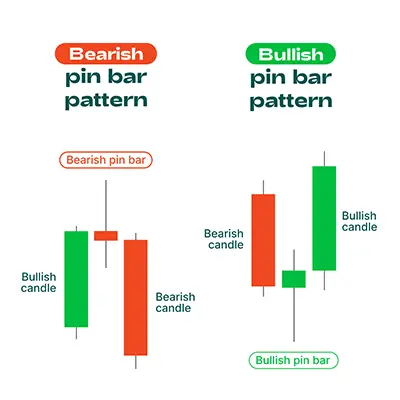

பின்பார் முறையானது சந்தையின் மேல் அல்லது கீழ் சுழற்சிக்கு ஒத்துவைக்காத முறை
மற்றும் எதிரான சுழற்சியை குறிப்பிடும் வர்த்தக முறையாகும். இந்த முறை ஒரு நீளமான
உடல் மற்றும் ஒரு சிறிய வால் மூலம் உருவாகும். உடலின் நீளம் வாலத்தின் நீளத்தைக்
காட்டிக்காட்டிய மற்றும் அதுவே மிகவும் சக்தமான முறையாகும்.